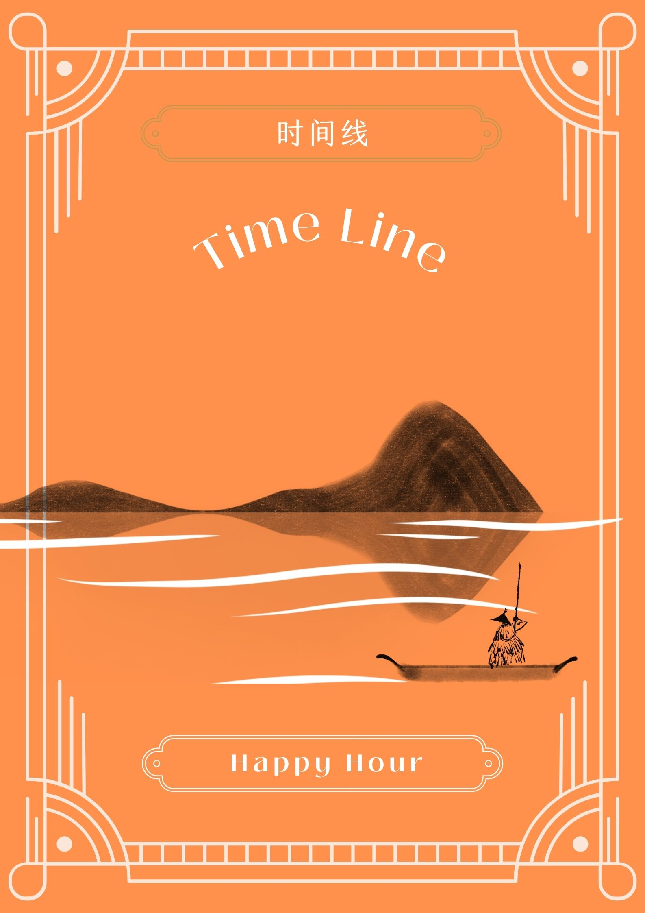

{{ item.score}} {{index === currentTeamIndex ? '⭐' : ''}}
+
-

 事件：{{ currentCardToBeChosen.description }} [{{currentCardIndex}}/{{allCards.length}}]
小问题：{{currentCardToBeChosen.extraQuestion.question}} 本题{{currentCardToBeChosen.extraQuestion.score}}分
答案：{{currentCardToBeChosen.extraQuestion.answer}}
事件：{{ currentCardToBeChosen.description }} [{{currentCardIndex}}/{{allCards.length}}]
小问题：{{currentCardToBeChosen.extraQuestion.question}} 本题{{currentCardToBeChosen.extraQuestion.score}}分
答案：{{currentCardToBeChosen.extraQuestion.answer}}